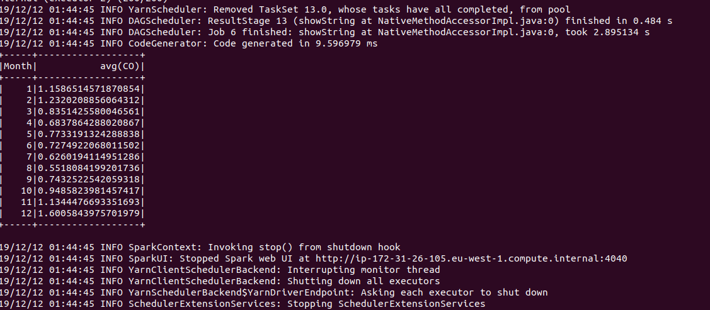
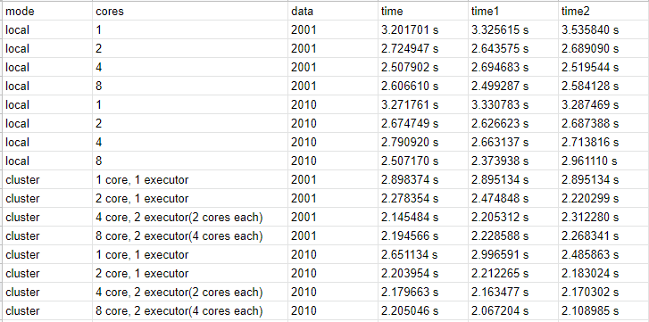

Need for Big Data
Analyzing and understanding a huge amount of data can offer a better perspective of why air pollution happens and what could be the most efficient and effective measures to counter it.
Our data
We obtained our dataset “Air Quality in Madrid (2001-2018)“ from the website Kaggel. Kaggel is an online community of data scientists and machine learners which provides open source datasets of different fields. Our dataset contains information about 17 pollutants which concentration was measured by 24 different stations hourly between January 2001 and April 2018. Not every station has the same equipment, therefore each station can measure only a certain subset of pollutants. Overall, the dataset consists of 18 files, one for each year. Link to our dataset here
Our model
As we have already mentioned, we have the data for every hour from 24 stations located in Madrid, and our dataset extends from 2001 to 2018. This large amount of data is too much to be optimally represented in a diagram. So we will smooth our data by calculating the monthly average for each element. After processing the data, our model creates an output file for every element and year, which contains the average pollutant concentration for each month (i.e. output_CO_2001).
Brief description of the used technologies
To construct the model we are using pySpark with its both local and cluster mode. After that we process the output of the model with several python scripts, one of which is using “Matplotlib” to create diagrams for a better visual representation of the results. Finally, we populate of website with the created diagram.
How to execute the model and all relative scripts
Local mode:
Requirements:
-Installed spark and python
Our pyspark model can be easily executed running the following command in model/combine directory:
spark-submit monthly_avg_spark_fixed.py {element} {year}
Where:
{element} - is one of the five elements that we are using CO, NO_2, O_3, PM10, SO_2
{year} - is one of the years between 2001 and 2017
E.g: spark-submit monthly_avg_spark_fixed.py CO 2001
The output of this execution is a subfolder “output_{element}_{year}” in the folder outputs.
This folder contains 12 different .csv files with the number of the month and the mean for it.
Cluster Mode:
To execute it on this mode you will need a cluster in AWS. The command is the same as for Local mode for
a non parallel execution. For a parallel one the command is:
spark-submit --num-executors x --executor-cores y spark-submit monthly_avg_spark_fixed.py {element}
{year}
Where:
x- number of executors(worker nodes)
y- number of threads per executor
{element} - is one of the five elements that we are using CO, NO_2, O_3, PM10, SO_2
{year} - is one of the years between 2001 and 2017

Go to the folder model/combine. Here you will see our dataset(18 csv files- with name madrid_year.csv),
3 directories- diagrams(here are all generated diagrams), monthlyAvg(a folder with combined solutions
for a specific element and year), outputs(with a subfolder of every execution of the model). Also in
model/combine you can find 3 python scripts- combineMonthAvg.py(script that combines the output of the
model to a single csv file), diagram.py(script that creates a diagram for specific years and element)
and runner.py(the purpose of this script is to generate all diagrams for every year for the 5 elements
that we are interested in. To do that, it executes the model and all other scripts for every element and
year. This execution is taking above 30 minutes.).
Requirements:
-Installed spark and python(the scripts are using python 2)
sudo pip install plot
sudo apt-get install python-pip
sudo pip install numpy
sudo pip install pandas
Command to generate all diagrams, execute in /model/combine:
./runner.py
Performance
After creating the model we prepared some performance tests to see the execution time in different
environments. We tested the model with two .csv file of our dataset- madrid_2001.csv and
madrid_2010.csv. The first file has 217.848 rows and the other 209.449. The tests consist of multiple
executions of the model with the two files. They are run in local environment(a laptop with i5-8250u and
8GB of RAM) and an AWS cluster(m4.xlarge in Ireland). The table below represents the obtained
results.
